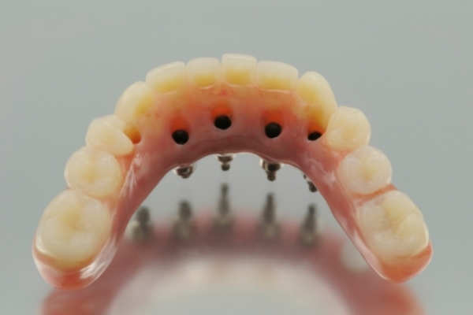

Rellene el formulario para recibir
«SwissDent» con descuento
"Cuando los implantes se convierten en una pesadilla: ¿por qué elegir carillas postizas puede ser una salvación para usted y sus dientes?"
¿Está pensando en solucionar el problema de ausencia de dientes? ¿Conozca todos los tipos de prótesis fijas y sus características? ¿Sabe algo sobre la existencia de las carillas postizas y sus ventajas?
En este artículo vamos a ver cuáles son los principales tipos de dentaduras postizas, cuáles son sus características y también veremos otros aspectos, tales como el modo de colocar las dentaduras postizas, cuánto cuesta la dentadura fija y cómo limpiarlas.
Además, abordaremos una solución innovadora al problema de la falta de dientes o los dientes antiestéticos con las carillas postizas.
Siga leyendo porque tenemos toda la información que necesita saber para disipar sus dudas.
¿Qué son las prótesis fijas?
La dentadura postiza fija es una prótesis dental artificial fija de uso permanente que uno no puede quitar para dormir, limpiarla, etc. Este tipo de prótesis facilita la masticación, evita la infiltración de alimentos, restaura la estética de los dientes y aporta importantes beneficios y numerosas ventajas en comparación con las prótesis postizas.
En función del tipo de soporte, encontramos dos tipos de prótesis fijas:
• Prótesis fijas sobre dientes naturales
• Prótesis fijas sobre implantes
La peculiaridad de las prótesis fijas sobre dientes radica en que se fijan en los dientes naturales del paciente, lo que requiere la preparación del diente natural antes de cementar la prótesis.
Las dentaduras fijas sobre implantes se fijan en implantes osteointegrados y pueden fijarse en cuatro, seis u ocho implantes, en función de cada caso.
Esto proporciona un soporte cómodo y también facilita la recuperación de toda la boca sobre varios implantes cuando el hueso está desgastado y no permite colocar más implantes.
La característica común de ambos tipos de prótesis fijas es que se adaptan perfectamente a la boca para evitar molestias y roces por movilidad, no requieren periodos de adaptación (como en el caso de las prótesis postizas) y se fabrican de forma individualizada para cada paciente.
Por tanto, estas son las principales características de las prótesis fijas o postizas, sin importar si se soportan por implantes o por dientes naturales:
• Las prótesis fijas (dentaduras postizas fijas) se fabrican de forma individual para cada paciente.
• Garantizan el ajuste y la adaptación perfecta.
• Sirven para restauraciones estéticas y funcionales completas.
.
• Uso cómodo.
• Permiten evitar molestias y la penetración de alimentos.
• No requieren periodo de adaptación.
• No es necesario quitarlas para limpiarlas.
Dentaduras fijas sin implantes
Como vimos en el apartado anterior, una prótesis fija sin implantes o prótesis fija sobre dientes es una prótesis que sustituye la funcionalidad y la estética de uno o varios dientes, que se coloca y se fija de forma permanente en los dientes naturales del paciente. Estos dientes en los que se fija, son los dientes sanos y son los que soportan la fuerza de la fijación. Aunque estas prótesis son (en principio, esto siempre depende de cada caso) más baratas que las prótesis sobre implantes, tienen una desventaja importante, y es que requieren la preparación de los dientes a los que se fijan, por lo cual no son las más recomendables desde nuestro punto de vista.
Absolutamente todos los dentistas son partidarios de conservar los dientes naturales y protegerlos siempre que sea posible, por lo cual preferimos elegir opciones que no requieran preparación de dientes sanos, como las prótesis sobre implantes u otras opciones que no requieran ninguna acción mecánica sobre los dientes sanos.
De esta forma, entre las desventajas de las prótesis fijas sin implantes, podemos destacar las siguientes:
• consisten en varias coronas unidas en una construcción única;
• se colocan sobre los dientes vecinos a los que faltan, lo que implica tallar, es decir, dañar los dientes sanos de soporte
• no pueden utilizarse para sustituir más de tres dientes, ya que la estructura puede no soportar la carga
• no pueden garantizar la carga masticatoria uniforme, por lo cual es característica la atrofia del hueso debajo del puente;
A continuación, le explicamos en qué consiste una prótesis fija sobre implantes.
Prótesis fija sobre implantes
Una prótesis fija sobre implantes es una prótesis en la cual la dentadura está unida a implantes osteointegrados que mantienen la dentadura en su sitio sin dañar los dientes naturales restantes (si los hay).
Dependiendo de cada caso, la dentadura fija sobre implantes puede implicar cuatro, seis u ocho implantes que se fijan al hueso, lo que permite que la dentadura se ajuste y se estabilice mejor que la dentadura postiza y no dañe los elementos vecinos, como los que se fijan a los dientes.
La mayoría de los pacientes se imaginan las prótesis fijas sobre implantes como la única forma de volver a disfrutar de sus dientes naturales, tanto estética como funcionalmente, sin importar si han perdido uno, algunos o todos los dientes.
Al llegar a este punto, es posible que usted se pregunte qué es lo mejor en su caso, utilizar prótesis fijas o postizas, o en caso de elegir prótesis fijas, qué ventajas tienen. En este sentido, debe saber que elegir la dentadura fija tiene una serie de ventajas comparado a la postiza, entre las que destacan las siguientes:
• Mayor comodidad al comer y hablar
• Mayor estabilidad y resistencia, al estar los dientes fijados al hueso
• Resultados estéticos más naturales gracias al diseño individualizado
• Mayor vida útil

Como sabemos, no existe una solución perfecta que solo tenga cualidades positivas, por lo cual en el siguiente apartado nos gustaría prestar atención a los inconvenientes conocidos de las prótesis sobre implantes (tanto postizas como fijas) para disipar sus preocupaciones.
El primer inconveniente es la complejidad de la colocación:
La colocación de prótesis sobre implantes puede requerir procedimientos más complejos y costosos, como un implante dental o una corona, que pueden causar molestias y dolor al paciente.
La necesidad de extracción dental:
En algunos casos, puede ser necesario extraer dientes sanos para colocar la dentadura fija, lo cual puede provocar la pérdida de función y los defectos estéticos de los dientes.
Ajuste limitado:
Las prótesis sobre implantes no pueden ajustarse ni remodelarse tan fácilmente como, por ejemplo, las carillas postizas. Esto puede provocar la necesidad de sustituir completamente la dentadura si los dientes se mueven o se producen otros cambios en la boca.
Necesidad de cuidados especiales:
Las dentaduras postizas sobre implantes pueden requerir cuidados especiales, como higiene y limpieza regulares para evitar la aparición de bacterias e infecciones.
Restricciones para comer y hablar:
Durante el proceso de adaptación a la prótesis fija sobre implantes, el paciente puede experimentar molestias y restricciones para comer y hablar, lo cual puede empeorar su calidad de vida.
¿Qué sabe usted sobre las carillas postizas y sus características?
¿De qué están hechas?
Las carillas postizas están hechas de material polimérico de alta calidad que tiene elasticidad muy alta. Esto significa que el elástico es de tamaño universal y se adapta a cualquier tipo de mandíbula, garantizando un ajuste seguro para cualquier tipo de diente.
¿Para quién se recomiendan las carillas postizas?
Las carillas postizas SwissDent se recomiendan para cualquier persona que desee una sonrisa mejor gracias a un procedimiento indoloro que puede hacer que los dientes vuelvan a ser blancos y mejorar la autoestima. También serán útiles para varios problemas, entre los cuales destacan:
• Mandíbula con dientes desiguales, que suelen crecer bastante separados;
• Dientes ausentes o destruidos;
• Presencia de placas dentales incisivas;
• Dientes oscuros o amarillentos;
• Presencia de empastes viejos y ennegrecidos;
• Presencia de anomalías en la mordida;
• Dientes que necesitan alineación;
• Dolor de dientes en caso de dientes demasiado pequeños.
¿Cuáles son las ventajas de las carillas postizas?
Facilidad de uso:
Las carillas postizas son más fáciles de colocar y quitar, lo que facilita su uso. Son especialmente útiles si el paciente tiene movilidad limitada, tiene problemas para manipular cepillos de dientes o necesita quitarse la dentadura para su limpieza y cuidado.
Confort:
Las carillas postizas se fabrican a partir del material más fino, por lo cual son más cómodas de usar.
Coste más asequible:
Las carillas postizas pueden ser más asequibles que las dentaduras postizas, lo cual puede resultar atractivo para los pacientes que no pueden permitirse dentaduras más caras sobre implantes.
Ajustables:
Las carillas postizas pueden ajustarse y remodelarse, lo que facilita su corrección en caso necesario, por ejemplo, si los dientes se mueven como resultado de un tratamiento dental o una remodelación de la mandíbula.
Protección contra daños:
Las carillas postizas pueden servir de protección para los dientes naturales, especialmente para los propensos al crujido de dientes o al desgaste dental. Pueden proteger los dientes contra daños y pérdidas dentales adicionales.
Facilidad de uso:
Las carillas postizas pueden ser más fáciles de usar en la vida cotidiana, ya que no restringen la capacidad de hablar y comer, mientras que en caso de prótesis sobre implantes uno tardará algún tiempo en adaptarse a su uso.
Menos invasivas:
La colocación de carillas postizas suele ser menos invasiva que la de dentaduras postizas y no requiere extracción de dientes ni otros procedimientos importantes.
Como puede ver, se trata de un producto realmente revolucionario en el mercado dental.
Nuestra única advertencia sería pedirle que cuando vaya a adquirirlas, se asegure de comprar carillas postizas SwissDent originales a través del canal oficial de pedidos para evitar comprar falsificaciones o copias de baja calidad de este producto.
Si detecta productos que se parecen a las carillas postizas por precio muy bajo, tenga cuidado: se trata de estafadores que intentan venderle un producto falsificado que no solo no le ayudará, sino que puede empeorar el estado de sus dientes.
¡Esperamos que todo el mundo pueda mejorar su sonrisa con estas fantásticas carillas postizas SwissDent!

Sólo tienes que introducir tu nombre y número de teléfono.
¡Date prisa! Te queda tiempo:
30 : 00
¡Date prisa! Te queda tiempo:
30 : 00
Utiliza encriptación para garantizar la protección de tus datos.
194 comentarios desde hoy
José Gutierrez
¿Quién encargó estas carillas, qué opina de la calidad, buena o una falsificación china?
Me gusta
Contestar
Traducir
Hace más de una hora
Carmen Díaz
José, las pedí aquí a través del formulario de pedido oficial. Son originales, no falsas. Tengo un gran hueco entre los dientes frontales superiores, andaba muy acomplejada. Fui al dentista y me dijeron que solo un sistema de brackets puede corregirlo, pero durante el resto de mi vida tendré que dormir con un protector bucal y es doloroso. SwissDent me ha salvado la vida. Es fácil de instalar y se mantiene en su sitio.
Me gusta
Contestar
Traducir
Hace más de una hora
Carlos Martin
Yo también las llevo usando desde hace 3 meses. Ninguna molestia, la articulación no ha cambiado, me acostumbré a ellas en unos 10 minutos después de la colocación. Durante el uso no se han oscurecido. Y su precio es una gran ventaja.
Me gusta
Contestar
Traducir
Hace más de una hora
Isabel Perez
Tengo miedo de que queden poco naturales. ¿Puedes compartir una foto tuya con las carillas puestas?
Me gusta
Contestar
Traducir
Hace más de una hora
Ana Moreno
Toma. Llevo usándolas un mes y medio. Cuando las coloqué y vine a trabajar, todo el mundo pensó que me había blanqueado los dientes (tengo el esmalte muy amarillo por naturaleza), me pidieron el número de mi dentista
Me gusta
Contestar
Traducir
Hace más de una hora
Alejandro Salas
Trabajo como agente inmobiliario y mi sonrisa es mi medio de vida. Si no tienes una sonrisa bonita, no eres capaz de atraer a un cliente. Y mi boca era horrible, mis dientes no estaban rectos y mi color no era el adecuado. Ya conocéis los precios de los dentistas, no podía permitírmelo. SwissDent fue un auténtico regalo del cielo. El precio es bajo, y el resultado es como el del mejor dentista. Después de comprar carillas, mis ingresos casi se han duplicado. ¡Creo que el resultado es genial!
Me gusta
Contestar
Traducir
Hace más de una hora
Maria Lopez
Yo también trabajo con personas. Intento ir al dentista regularmente, hacerme blanqueamientos y limpiezas. Y hace poco noté que mis dientes se volvieron sensibles, mi médico me dijo que no debía blanquearme más y me recomendó SwissDent como alternativa. Dudé, pensé que sería muy incómodo y que cambiaría la dicción. Aun así decidí probarlo, ya que el precio es incluso más bajo que el de una limpieza normal. Todos mis temores resultaron infundados. Son muy finas, por lo que ni siquiera se notan, pero son muy duraderas, mi dicción no cambia, no se oscurecen con el tiempo, ni siquiera con el café o los cigarrillos. Se ajustan perfectamente, así que puedes llevarlos todo el día y comer con ellos puestos. Los materiales son de alta calidad. Son fáciles de cuidar. Así que estoy muy contenta con mi compra.
Me gusta
Contestar
Traducir
Hace más de una hora
Pilar Blanco
Mis dientes siempre han sido bonitos pero quiero que sean perfectos. ¡Con estas carillas mi sonrisa es como la de una estrella de Hollywood!
Me gusta
Contestar
Traducir
Hace más de una hora
Victoria Campos
He oído hablar de las carillas removibles como una alternativa a las de cerámica, pero no sé cuáles pedir. Tengo miedo de elegir el tamaño incorrecto ... No puedo decidir cuáles pedir... Compartid vuestras experiencias, por favor...
Me gusta
Contestar
Traducir
Hace más de una hora
Paula Ramos
Victoria, SwissDent tiene una talla universal, por lo que se adapta a todo el mundo. Lo sé por experiencia propia. Mis dientes son pequeños y no son rectos, y mi marido, como comprenderá, tiene dientes más grandes y se adaptan perfectamente a él y a mí.
Me gusta
Contestar
Traducir
Hace más de una hora
Victoria Campos
Paula, ¿se pueden enderezar los dientes si se llevan el tiempo suficiente?
Me gusta
Contestar
Traducir
Hace más de una hora
Paula Ramos
Victoria, desde luego no es un sistema de brackets, pero mis dientes se han alisado.
Me gusta
Contestar
Traducir
Hace más de una hora
Lucia Gil
Llevo mucho tiempo buscando la mejor manera de arreglar mi sonrisa. El caso es que tengo los dientes mal y muchos empastes, no importa cómo se coja el color, de todos modos se nota mucho. Así que llegué a la conclusión de que SwissDent es la mejor solución. Lo primero es el precio. Si tienes carillas de cerámica o un puente, es muy caro. En segundo lugar, no tengo que serrarme los dientes. En tercer lugar, SwissDent es muy cómodo y tiene un aspecto natural. En general, por un precio mínimo, he conseguido una sonrisa deslumbrante. Quién puede dudar si pedirlo o no, ¡sin duda lo recomiendo!
Me gusta
Contestar
Traducir
Hace más de una hora
Antonia Serrano
Yo también pedí carillas. La entrega fue muy rápida, tardaron solo 2 días. Se colocan en 2 minutos, se sujetan bien, no se caen, tienen un aspecto muy natural. Por desgracia, las pedí cuando no había descuento, pero incluso a precio no rebajado sigue siendo muy barato. Estoy muy satisfecha con el pedido.
Me gusta
Contestar
Traducir
Hace más de una hora
Daniel Navarro
¿Podéis decirme si me quedaran bien si me faltan algunos dientes? ¿No se caerán?
Me gusta
Contestar
Traducir
Hace más de una hora
Marta Alonso
Daniel, mi padre los lleva desde hace seis meses, le faltan seis dientes. Dice que le quedan perfectos, que no le molestan en la boca y que están bien ajustados.
Me gusta
Contestar
Traducir
Hace más de una hora
Daniel Navarro
Marta, gracias por la respuesta. Pediré unas para mí, sobre todo ahora que tienen tanto descuento.
Me gusta
Contestar
Traducir
Hace más de una hora
Alberto Ibañez
Desde la infancia todos mis dientes están manchados, es decir, tengo fluorosis, los que la conocen saben qué tipo de dolor es. Lo que pasa es que el agua de la ciudad donde pasé mi infancia tiene un exceso de flúor. Mi médico me disuadió de blanqueamiento, dijo que la diferencia de color sería visible, y luego pensé en carillas de cerámica, pero después de escuchar el precio me di cuenta de que tendría que pedir un préstamo. Empecé a buscar una alternativa, y encontré SwissDent, después de leer los comentarios, las pedí a través del formulario de pedido oficial, para que no me dieran una falsificación china. ¡Ahora no puedo dejar de sonreír todo el tiempo!
Me gusta
Contestar
Traducir
Hace más de una hora
Laura Torres
¡Pedí unas carillas estupendas aquí! ¡Se ven muy bien! ¡Son geniales acaban de cambiar mi sonrisa! ¡Qué GRAN sonrisa tengo con estas carillas! ¡Es perfecta!
Me gusta
Contestar
Traducir
Hace más de una hora
Verónica Sanz
Mis dientes siempre han sido de mala calidad finos, translúcidos, torcidos, me sobresalen los colmillos. Ya sabes, para una chica la dentadura es fundamental. Además, me dan miedo los dentistas. Pero, resulta que hay una gran manera de conseguir una sonrisa de Hollywood sin visitar al dentista: las carillas removibles SwissDent. Al principio me daba miedo morder algo, pensaba que saldrían volando. No, por supuesto, se ajustan bien y quedan perfectas. Así que ahora QUIERO sonreír, ¡no como antes que salía en las fotos con los labios apretados!
Me gusta
Contestar
Traducir
Hace más de una hora
PEDIR
SWISSDENT